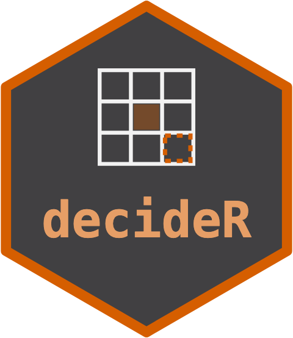

A decision-theoretic action with grounding and abstention
Source:R/decision-class.R
decision.RdThe object returned by decide() and the reference decisions. It records
the chosen action, the expected_utility that selected it, the complete
candidates ledger (every action with its expected utility and
feasibility), and the two provenance fields the Independent Oracle Principle
requires: grounding (grounding_grounded() or grounding_unverified())
and the abstention record (abstained, abstain_reason). When a decision
abstains the action is the caller's safe_action, not the utility-maximal
one.
Arguments
- action
The chosen action. The
safe_actionwhenabstainedisTRUE.- action_label
A short human-readable label for the action; suffixed
"ungrounded"when the grounding is not grounded.- expected_utility
The expected (mean-over-draws) utility of the chosen action, or
NA_real_when abstained.- candidates
A
data.framewith one row per candidate action:action,expected_utility,feasible.- grounding
A canonical grounding token.
- abstained
TRUEwhen the decision declined the utility-maximal action.- abstain_reason
A short reason string, or
NA_character_.- safe_action
The fallback action taken on abstention.
- method
The decision rule applied (e.g.
"expected_profit").- inputs
A named list recording input provenance.
- metadata
A named list of free-form metadata.
See also
decide() and the reference decisions that produce this object.
Other decisions:
decide(),
decide_input_rate(),
decide_position_size(),
is_grounded()
Examples
d <- decision(action = 120, action_label = "rate=120 kg/ha",
expected_utility = 1840, grounding = grounding_grounded())
d@action
#> [1] 120